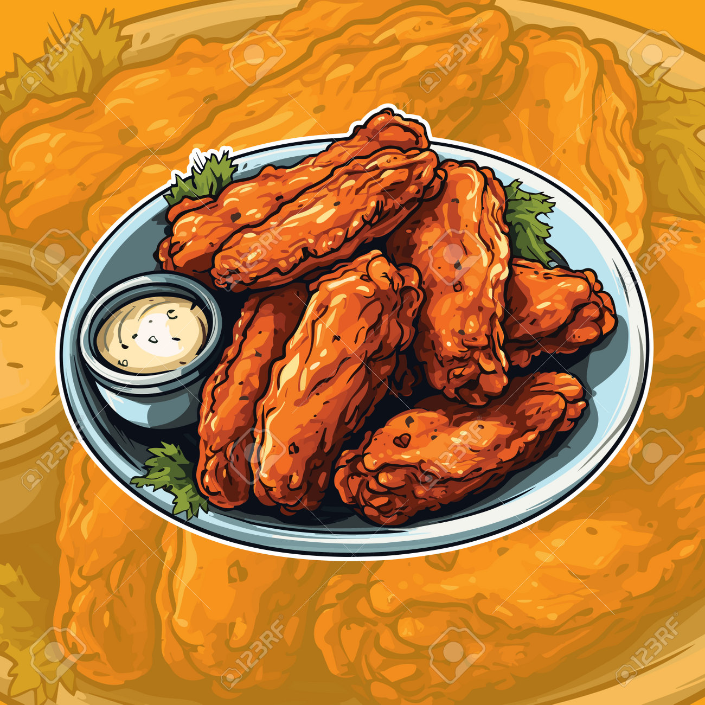

Hot Wings

Description
This mouth-watering recipe is ready in just 40 minutes and the
ingredients detailed below can serve up to 4 people.
Ingredients
- Rapeseed oil, for frying
- 24 chicken wing parts (12 wings separated into 2 pieces)
- One 12-ounce bottle hot pepper sauce, such as Frank's
- 120g butter
- Several dashes Worcestershire sauce
- Several dashes Tabasco
- Blue cheese dip, for serving
- Celery sticks, for serving
Steps
- Preheat the oven to 160°C. Heat 3 inches of oil in a heavy pot to 190°C.
- Add half the chicken wing parts to the oil and fry them until they're golden brown and fully cooked, 5 to 7 minutes. Remove and drain on paper towels. Repeat with the other half of the wing parts.
- In a saucepan, heat the cayenne sauce and butter over medium-low heat. Add the Worcestershire and hot sauce. Let it bubble up, and then turn off the heat.
- Place the wings in an ovenproof dish and pour the hot sauce over the top. Toss to coat, and then bake in the oven for 15 minutes.
- Serve with blue cheese dip, celery sticks... and your favorite cold, fizzy beverage.